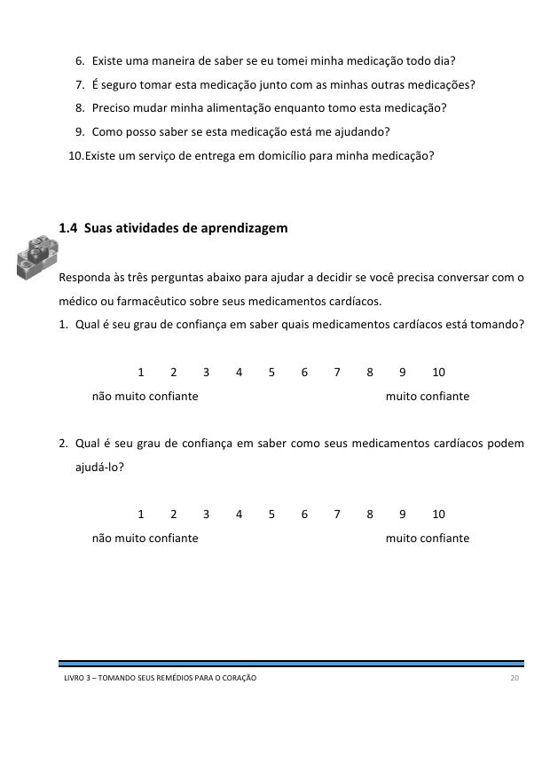

Desafio: Tome seus medicamentos
Pesquisas dizem que se você tomar seus medicamentos para o coração regularmente como prescrito pelo
médico, isso vai ajudar a prevenir o agravamento de sua doença cardíaca e diminuir a chance de você ter
outro evento cardíaco. O plano de aprendizagem desta semana vai te ensinar sobre seus medicamentos para
o coração e por que é importante tomá-los regularmente conforme prescrito por seu médico.
O que você deve saber ao final desta semana:
- As classes comuns de medicamentos para o coração e como eles te ajudam
- Quem pode te ajudar a gerenciar os efeitos colaterais e responder suas dúvidas
1. Pense e reflita sobre o plano da semana passada, e responda as perguntas abaixo
2. Assista ao vídeo THRiVE:
Clique na imagem abaixo para assistir ao vídeo.
3. Planeje a sua semana e preencha as perguntas abaixo
4. Leia o material abaixo e aprenda um pouco mais sobre os seus medicamentos
Para saber mais sobre os seus medicamentos, converse com seu médico, com o seu farmacêutico ou com a sua equipe da reabilitação.

